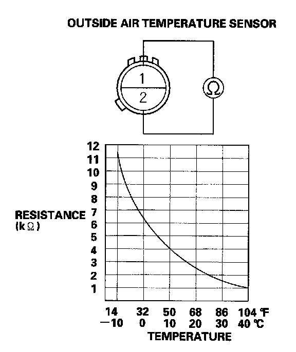

Ambient Temperature Sensor / Switch HVAC: Testing and Inspection
Outside Air Temperature Sensor Test1. Remove the outside air temperature sensor.
2. Dip the sensor in ice water, and measure the resistance. Then pour warm water on the sensor, and check for a change in resistance.

3. Compare the resistance reading between the No.1 and No.2 terminals of the outside air temperature sensor with the specifications shown in the graph; the resistance should be within the specifications.
4. If the resistance is not as specified, replace the outside air temperature sensor.